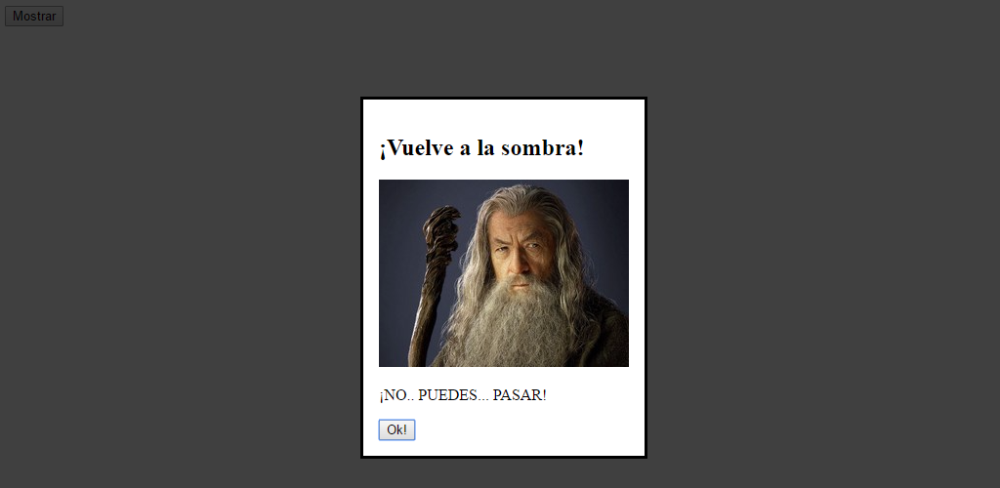
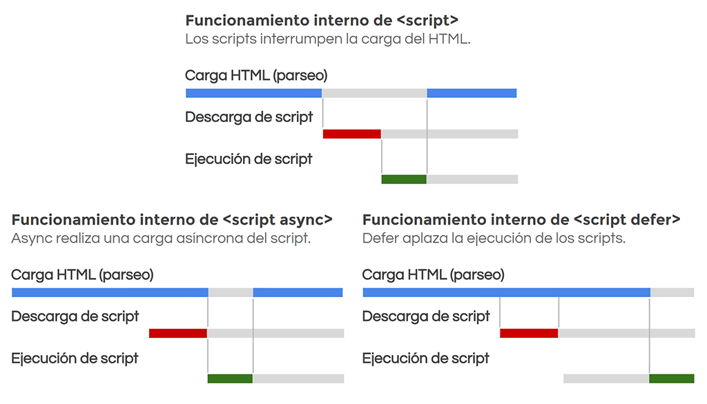

Etiquetas de scripting¶
Etiquetas HTML interactivas¶
A partir de HTML5, existen algunas etiquetas que proporcionan características interactivas a una página. En dichas etiquetas el usuario debe tomar parte de forma activa para activarlas o utilizarlas. Elementos desplegables, menús contextuales, diálogos emergentes, etc...
Veamos una lista de dichas etiquetas:
| Etiqueta | Descripción |
|---|---|
<details> |
Crea un elemento desplegable. Etiqueta que contiene todo el contenido del elemento. |
<summary> |
Título del desplegable que aparece siempre, se encuentre desplegado o no. |
<dialog> |
Ventana de diálogo que puede contener y mostrar cierta información. |
Elementos desplegables¶
Con la etiqueta <details> se puede crear un elemento desplegable que el usuario puede expandir o contraer para ver más información. Se trata de una etiqueta contenedora que actúa como un <div>, salvo que todo el contenido de esta etiqueta no se muestra inicialmente. En su lugar, aparece una flecha y el texto proporcionado en la etiqueta <summary> (o el texto «Detalles» si se omite).
<details>
<summary>Más información</summary>
<h2>Nombre del sujeto</h2>
<img src="foto.jpg" alt="Foto del sujeto" />
</details>
Si pulsamos sobre el texto o la mencionada flecha, el contenido de la etiqueta <details> se muestra o se oculta, dependiendo de si se encontraba oculto o visible respectivamente. La etiqueta <details> tiene un atributo open, que si se especifica el contenido es visible por defecto.
Esta etiqueta pertenece a HTML5.1 y aún no está soportado por la mayoría de navegadores.
Diálogos emergentes¶
HTML5.1 incorporará los denominados diálogos emergentes, o lo que es lo mismo, ventanas emergentes compatibles con código HTML que podemos utilizar y personalizar para realizar avisos o alertas al usuario. Hasta ahora, la forma más simple de crear avisos o alertas emergentes era recurrir al alert de Javascript o crear ventanas personalizadas desde Javascript. Sin embargo, con HTML5.1 podremos crear desde HTML sencillos o complejos diálogos con texto, botones, imágenes, video o cualquier elemento HTML que se nos ocurra.
La forma de crear diálogos es muy sencilla. Utilizaremos la etiqueta <dialog> y en su interior colocaremos toda la información que queramos mostrar en la ventana:
.sandbox pre { margin: 0; overflow: auto; max-height: var(--height, auto); }
<dialog id="ms">
<p>¡Hola, soy un mensaje!</p>
<button id="close" onclick="document.getElementById('ms').close()">Ok!</button>
</dialog>
<button id="show" onclick="document.getElementById('ms').show()">Mostrar</button>
En este caso, estamos creando una ventana de diálogo con un párrafo de texto y un botón para cerrar la ventana. Fuera de ella, un botón para mostrar el diálogo. La etiqueta <dialog> puede tener el atributo open para indicar que la ventana debe estar abierta por defecto. En caso contrario, no se muestra inicialmente.
Diálogos modales¶
En programación, una ventana modal es un tipo de ventana que se muestra al usuario, generalmente para avisarle de algo o pedirle una información necesaria para continuar. Se caracteriza en que una vez se muestra, no se le permite realizar otra tarea hasta que atienda el mensaje de esa ventana modal (pulsar ok, responder una pregunta, etc...).
Para crear una ventana modal sólo tendremos que usar la función showModal() desde Javascript, en lugar de utilizar la función show() que utilizamos en el ejemplo anterior:
<dialog id="ms">
<h2>¡Vuelve a la sombra!</h2>
<img src="gandalf.jpg" alt="Gandalf" />
<p>¡NO.. PUEDES... PASAR!</p>
<button id="close" onclick="document.getElementById('ms').close()">Ok!</button>
</dialog>
<button id="show" onclick="document.getElementById('ms').showModal()">Mostrar</button>
Esto mostrará la siguiente ventana de diálogo modal:

Obsérvese que hemos utilizado la pseudoclase CSS ::backdrop sobre la ventana de diálogo para darle estilos a la parte de detrás de la ventana modal, pudiendo, por ejemplo, aplicarle un color de fondo negro con transparencia al 25% con la propiedad background-color:RGBA(0,0,0, .75):
#ms::backdrop {
background-color: RGBA(0, 0, 0, 0.75);
}
Las ventanas de diálogo de HTML5.1 aún son muy recientes y el soporte no está muy extendido entre los diferentes navegadores del panorama web:
Atributo contentEditable¶
En HTML5 podemos utilizar el atributo contentEditable sobre cualquier elemento para darle al usuario capacidades de edición sobre el mismo. De esta forma, podemos incluir el atributo contentEditable a una etiqueta <p> de párrafo, o a una etiqueta <h3>, por ejemplo, lo que permitirá al usuario que, al pulsar sobre dichos elementos, pueda modificar el texto que aparece:
<h3 contenteditable>Título del artículo</h3>
<div contenteditable>
<p>Este es un párrafo de ejemplo del ejemplo en cuestión.</p>
<p>Con él se pretende mostrar el funcionamiento del atributo contentEditable.</p>
</div>
De esta forma, podemos dotar de capacidades de edición al usuario. Obsérvese siempre que el HTML, CSS y Javascript son tecnologías que trabajan en el front-end, o lo que es lo mismo, son descargadas desde el alojamiento web y transferidas a una carpeta temporal de nuestro sistema. En ella, el navegador la lee y ahí es donde estamos realizando dichas modificaciones.
Si el usuario volviese a recargar la página tras modificar ciertos elementos, los cambios no se verán reflejados. Para ello, hay que hacer ciertas operaciones (por ejemplo, mediante Javascript o con un botón de Guardar cambios), y realizar una petición al backend del alojamiento web para que guarde los cambios.
Atributo hidden¶
HTML5 incorpora también un atributo hidden mediante el cuál podemos hacer desaparecer visualmente un elemento HTML (y todo su contenido, si es una etiqueta contenedora). Hasta ahora, para realizar esta tarea teníamos que recurrir a CSS, ya que se trata de una cuestión de presentación visual. Sin embargo, la diferencia entre el atributo hidden o utilizar estilos es que mediante CSS podemos mostrar elementos dependiendo de acciones del usuario o del medio en el que estén (media queries, por ejemplo).
Por otro lado, el attributo hidden se propone utilizarse cuando el usuario ha realizado una acción y hay una serie de elementos que queremos ocultar porque ya no son relevantes, independientemente de los estilos que se estén aplicando en la página:
<div id="info" hidden>Información</div>
<button onClick="toggleHidden('#info')">
Mostrar/ocultar información
</button>
En el caso anterior, tenemos un <div> con texto que vamos a ocultar cada vez que el usuario pulse el botón. Dicho botón ejecuta la función Javascript toggleHidden() para ocultar o mostrar el elemento, dependiendo si ya estaba visibile o si estaba oculto:
function toggleHidden(selector) {
element = document.querySelector(selector);
element.hidden = element.hidden ? false : true;
}
El soporte de este atributo es completo en la mayoría de los navegadores: https://caniuse.com/hidden
Etiquetas HTML de scripts¶
A medida que aprendemos HTML vemos que se trata de un lenguaje de marcas estupendo y muy potente, pero también nos vamos dando cuenta que ciertos detalles no se pueden cubrir sólo con HTML y CSS. Para ello tenemos que hacer uso de un lenguaje de programación llamado Javascript.
Este lenguaje es muy potente y flexible, pero también requiere mayor dominio del código que con HTML y CSS, puesto que estos últimos sólo son lenguajes de marcas y estilos respectivamente, mientras que Javascript es un lenguaje de programación que requiere ciertos conocimientos y metodología de desarrollo.
Nota
En este artículo cubriremos una parte básica de Javascript muy relacionada con HTML. Si quieres aprender Javascript en profundidad, echa un ojo a LenguajeJS.com.
La etiqueta script¶
Para utilizar Javascript, lo que hacemos normalmente es indicar al HTML que queremos cargar un script (generalmente, un archivo de texto con código Javascript) y hacerlo funcionar sobre la página actual. Para hacer esto, utilizaremos la etiqueta <script>, que permite indicar una serie de atributos:
| Atributo | Valor | Descripción |
|---|---|---|
src |
URL | Dirección URL del script externo a cargar. |
type |
tipo | Tipo de script a cargar. Si se omite, se asume text/javascript como valor. |
nomodule |
Boolean | Si se define este atributo, el script no se carga en navegadores modernos. |
async |
Boolean | Ejecuta el script cuando se haya descargado, sin bloquear el navegador. |
defer |
Boolean | Aplaza la ejecución del script, lo ejecuta al final, cuando haya descargado todo. |
Para empezar, ten en cuenta que la etiqueta <script> tiene fundamentalmente dos modos de funcionar, que se basan en como definas la etiqueta <script>:
- Como script en línea: El código JS se incluye en el HTML, dentro de la etiqueta.
- Como script externo: El código JS se incluye en el fichero Javascript enlazado en
src.
Un ejemplo de script en línea sería el siguiente. Observa que el código se incluye en el interior de la etiqueta, por lo que permanece en el documento HTML:
<script>
alert('¡Hola!');
</script>
El siguiente código, por otro lado, es un script externo, donde el código Javascript se encuentra en un archivo separado del HTML, concretamente en la ruta /js/script.js:
<script src="/js/script.js"></script>
En ambos casos, el navegador interrumpirá la carga de la página para procesar y ejecutar el Javascript, detalle que quizás no sea el más adecuado para nuestro desarrollo. Veremos como se puede modificar en el siguiente apartado.
Modo de carga del script¶
Cuando indicamos un script externo mediante el atributo src, por defecto el proceso de carga del script por parte del navegador es el siguiente:
- Detiene temporalmente la carga del HTML en el lugar donde se encontró el
<script>. - Descarga el script
.jsal caché de ficheros temporales del navegador. - Ejecuta el script una vez descargado.
- Reanuda la carga del documento HTML por donde lo dejó, en cuanto termina la ejecución del script.
Este es el modo de carga por defecto de los scripts por parte del navegador. Sin embargo, existen dos métodos de carga diferentes: la carga asíncrona y la carga diferida:
| Modo de carga | Atributo | Descripción |
|---|---|---|
| Carga normal | (ninguno) | Bloquea la carga de la página y se ejecuta inmediatamente. |
| Carga asíncrona | async |
Ejecuta el script tan pronto como esté disponible. |
| Carga diferida | defer |
Aplaza la ejecución del script al final de la carga de la página. |
Estos dos métodos tienen ligeras diferencias respecto al modo de carga básico que vimos anteriormente, y que aparece el primero en la siguiente ilustración:

-
Carga asíncrona: El navegador descarga el script sin detener la carga del documento HTML. Una vez descargado, detiene la carga del documento HTML temporalmente, ejecuta el script, y una vez terminada la ejecución, continua con la carga del documento HTML. Este tipo de carga se realiza incluyendo el atributo
asyncen la etiqueta<script>. -
Carga diferida: El navegador le da prioridad a la carga del documento HTML. Descarga el script de forma paralela sin detener la carga del documento HTML. Una vez ha terminado de cargar el documento HTML, ejecuta el script. Este tipo de carga se realiza incluyendo el atributo
deferen la etiqueta<script>.
Carga de módulos Javascript¶
En los últimos años, Javascript ha incluido una funcionalidad llamada módulos de Javascript. Dichos módulos son una modalidad específica de archivos Javascript, los cuales pueden compartir funcionalidades a través de las palabras clave import y export.
Estas funcionalidades están prohibidas por defecto, y sólo se podrán realizar si a la hora de cargar el script con la etiqueta <script> definimos el atributo type a module. Esto nos permitirá cargar el archivo Javascript como módulo y utilizarlo:
<script type="module">
import { Howler, Howl } from "https://unpkg.com/howler";
</script>
Nota
Es posible usar el atributo type="module" tanto en etiquetas <script> en línea (ejemplo anterior) como con etiquetas <script> que utilicen el atributo src. Además, todos los scripts cargados como módulos, se ejecutarán en modo diferido.
En algunos casos, podemos crear etiquetas <script> que utilicen un atributo nomodule. Dicho atributo indicará a navegadores modernos que soportan el atributo type=module, que no deben descargar ni ejecutar ese script. Sin embargo, navegadores antiguos que no lo soportan cargarán el script como un fichero Javascript normal y corriente:
<script type="module">
/* Código para navegadores modernos */
import { Howler, Howl } from "https://unpkg.com/howler";
</script>
<script nomodule>
/* Código para navegadores antiguos */
</script>
La finalidad de este atributo es poder crear scripts a modo de fallback para realizar tareas equivalentes en navegadores antiguos y dar soporte a otros sistemas menos modernos. Es lo que se conoce como el patrón module/nomodule.
Lenguajes de scripting¶
Por defecto, el lenguaje de scripting soportado por los navegadores es Javascript, por lo que cuando hablamos de scripting en el navegador (front-end, o en el lado del cliente) hablamos de este lenguaje. Javascript está basado en ECMAScript, el estándar que indica como debe actuar el lenguaje. Luego, es misión de cada navegador implementarlo de acuerdo a esas normas, aunque siempre hay algunas diferencias entre navegadores.
Existen alternativas para no utilizar Javascript directamente, sino algún lenguaje similar que traduce (o mejor dicho, transpila) a Javascript. Directamente, los navegadores solo soportan Javascript. Quizás, los transpiladores más populares a Javascript sean TypeScript y Babel.
La etiqueta noscript¶
Debemos ser conscientes de que, aunque actualmente la mayoría de los navegadores poseen Javascript, un usuario puede acceder desde un dispositivo que no tenga Javascript (muy poco habitual) o que tenga Javascript deshabilitado (poco habitual). Una buena costumbre, es proporcionar una alternativa (aunque sea mínima) para aquellos usuarios que no tengan Javascript habilitado.
Para ello, utilizaremos la etiqueta <noscript>:
<script>
var usuario = prompt("¿Cuál es tu nombre?");
alert("¡Hola, " + usuario + "!");
</script>
<noscript>
¡Hola, usuario!
</noscript>
En caso de que el usuario tenga capacidades de Javascript en su navegador, se ejecutará el código de la etiqueta <script>, sin embargo, si el navegador no tiene Javascript, se mostrará el texto proporcionado en la etiqueta <noscript>, que aunque no puede recoger el nombre de usuario, mostrará una alternativa.
De esta forma evitamos que si el usuario no tiene Javascript, vea una página en blanco.
La etiqueta template¶
La etiqueta <template> es un método ideal para reutilizar información HTML y tratarla mediante Javascript. En el siguiente ejemplo tenemos una tabla HTML que sólo tiene definida la cabecera de la misma. Sin embargo, un poco más abajo hay una etiqueta <template> que contiene una fila con 3 celdas:
<table id="tabla">
<tr>
<th>Nombre</th>
<th>Apellidos</th>
<th>Calificación</th>
</tr>
<template id="usuario">
<tr>
<td>1</td>
<td>2</td>
<td>3</td>
</tr>
</template>
</table>
El contenido de una etiqueta <template> es inerte, de modo que el navegador no interpreta su interior (no descarga imágenes, no ejecuta scripts, etc...) hasta que el usuario clona su contenido para insertarlo en el HTML.
En este ejemplo anterior, nosotros podríamos desde Javascript obtener el contenido de la plantilla <template>, clonarlo y añadirlo al final de la tabla de forma dinámica, para posteriormente modificar los datos de cada fila:
var template = document.getElementById("usuario");
var tabla = document.getElementById("tabla");
tabla.appendChild(template.content.cloneNode(true));
Nota
Si te interesa este tema, tienes más información sobre la etiqueta <template> (y plantillas en general) en este artículo sobre Plantillas, DOM y WebComponents.
Las plantillas HTML tienen relativamente buen soporte, aunque en el caso de querer dar soporte a Internet Explorer habría que utilizar algún polyfill como Minimal Polyfill for Template: https://caniuse.com/template
Eventos en HTML¶
En Javascript hay un concepto llamado evento que se utiliza para referirse al instante justo en el que ocurre un determinado suceso. Por ejemplo, existe un evento llamado click que se dispara cuando un usuario hace clic sobre un elemento HTML. Podemos decirle al navegador que cuando ocurra un evento concreto, realice una acción determinada. De esta forma, podemos preparar nuestra página para que actúe según las circunstancias.
Eventos¶
Existen muchísimos tipos de eventos en Javascript. Para activarlos, lo primero es elegir la etiqueta en la que ocurrirá el evento. Una vez elegida, colocaremos un atributo en dicha etiqueta para detectar si se produce el evento. Además, hay que indicar el prefijo on en el atributo del evento. Por ejemplo, si queremos detectar el evento click, el atributo HTML deberá llamarse onClick.
Así pues, veamos un ejemplo:
<div>
<img src="gandalf.jpg" alt="Gandalf" onClick="alert('¡Has hecho clic!')" />
</div>
En este sencillo ejemplo, hemos especificado una imagen que es la que estará «escuchando» el evento click. Si el usuario hace clic sobre ese elemento, o sea, sobre la imagen, el navegador dispará el evento y ejecutará la función Javascript alert(), mostrando un mensaje por pantalla: ¡Has hecho clic!.
Detalles del evento¶
En los eventos, puede que queramos obtener información más específica, como por ejemplo, el número de veces que hizo clic el usuario sobre la imagen (si fue un solo clic, si fue doble clic, etc...). Este dato específico lo devuelve el evento onClick a través del objeto especial event, así que continuemos con el ejemplo anterior, modificando algunas cosas:
<div>
<img src="gandalf.jpg" alt="Gandalf" onClick="updateCounter(event)" />
<p>Has hecho clic a Gandalf <span id="num">0</span> veces.</p>
</div>
Obsérvese que en este caso, en lugar del alert() usado antes, ejecutamos una función javascript que crearemos nosotros, llamada updateCounter(). Después de la imagen, hay un párrafo de texto que contiene una frase y un fragmento <span id="num"> que contendrá el número de veces que se ha pulsado sobre la imagen. Inicialmente se encuentra establecido a 0.
Por su parte, la función updateCounter() pasa por parámetro una variable especial event, que es la que tiene la información sobre el evento ocurrido, y que posteriormente utilizaremos para extraer dicha información.
Definimos la función updateCounter() en Javascript:
function updateCounter(e) {
document.querySelector("#num").textContent = e.detail;
}
Esta función busca la etiqueta HTML que tiene un id="num", y mediante .textContent modificamos su contenido. El nuevo contenido es e.detail que no es más que un dato que se encuentra en el evento que se ha disparado. Ese dato devuelve el número de veces seguidas (contador) que el usuario pulsó sobre la imagen.
Veamos finalmente lo que ocurriría con este ejemplo. Lo que aparece a la izquierda es cuando el usuario pulsa el botón del ratón (LButtonDown) y cuando lo suelta (LButtonUp):
Otros Eventos¶
Existen muchos otros eventos, prácticamente uno para cada acción que pueda ocurrir en un documento HTML. A continuación, muestro algunos grupos de eventos muy utilizados frecuentemente de la gran cantidad de eventos existentes en Javascript.
Eventos de documento¶
Es posible poner a escuchar ciertos eventos sobre el documento HTML completo, estableciendo el atributo del evento en la etiqueta <body>:
| Tipo de evento | Atributo HTML | Descripción |
|---|---|---|
| UIEvent | onLoad | La página (el documento HTML) ha terminado de cargarse. |
| UIEvent | onUnload | La página (el documento HTML) va a cerrarse. |
| UIEvent | onScroll | El usuario ha hecho scroll sobre la página (el documento HTML). |
Eventos de carga de recursos¶
Sobre las etiquetas que cargan un archivo externo, como podrían ser <img> o <script>, e incluso <style> con estilos CSS en línea. Los archivos multimedia <audio> y <video> tienen sus propios eventos específicos, ya que tienen un proceso de carga especial:
| Tipo de evento | Atributo HTML | Descripción |
|---|---|---|
| UIEvent | onLoad | El recurso ha terminado de cargarse en la página. |
| UIEvent | onUnload | El recurso ha sido eliminado de la página. |
| UIEvent | onAbort | El recurso ha sido cancelado y no ha terminado su carga. |
| UIEvent | onError | El recurso ha dado un error y no ha terminado su carga. |
| UIEvent | onSelect | El usuario ha seleccionado un texto de un campo de datos. |
Eventos de foco en elementos¶
Sobre etiquetas <input>, <textarea>, <select>, <a> o cualquier otra etiqueta que pueda ser seleccionable por el usuario pulsando la tecla TAB, existen una serie de eventos para controlar cuando gana o pierde el foco un elemento:
| Tipo de evento | Atributo HTML | Descripción |
|---|---|---|
| FocusEvent | onBlur | El elemento ha perdido el foco (foco de salida). |
| FocusEvent | onFocusout | El elemento ha perdido el foco (y permite bubble). |
| FocusEvent | onFocus | El elemento ha ganado el foco (foco de entrada). |
| FocusEvent | onFocusin | El elemento ha ganado el foco (y permite bubble). |
Eventos de ratón¶
Los eventos de ratón se utilizan para detectar todas aquellas acciones que el usuario realiza mediante el ratón con algún elemento de la página, como podría ser mover el ratón por encima de ellos, hacer clic, mover la rueda del ratón, etc...
| Tipo de evento | Atributo HTML | Descripción |
|---|---|---|
| MouseEvent | onClick | El usuario ha pulsado (y soltado) el elemento. |
| MouseEvent | onDblclick | El usuario ha hecho doble clic en el elemento. |
| MouseEvent | onMousedown | El usuario ha pulsado (aún sin haber soltado) el elemento. |
| MouseEvent | onMouseup | El usuario ha soltado el botón pulsado en un elemento. |
| MouseEvent | onMousemove | El usuario ha movido el ratón. |
| MouseEvent | onMouseenter | El usuario ha movido el ratón dentro de un elemento. |
| MouseEvent | onMouseleave | El usuario ha movido el ratón fuera de un elemento. |
| MouseEvent | onMouseout | El usuario ha movido el ratón fuera de un elemento (bubbles). |
| MouseEvent | onMouseover | El usuario ha movido el ratón dentro de un elemento (bubbles). |
| WheelEvent | onWheel | El usuario ha movido la rueda del ratón. |
Eventos de entrada de datos¶
Sobre elementos <input> o elementos HTML con el atributo contentEditable, y por lo tanto, elementos HTML que son editables por el usuario:
| Tipo de evento | Atributo HTML | Descripción |
|---|---|---|
| InputEvent | onBeforeInput | Un elemento <input> o con atributo contentEditable a punto de cambiar. |
| InputEvent | onInput | Un elemento <input> o con atributo contentEditable ha cambiado. |
Eventos multimedia¶
Sobre elementos multimedia como <audio> o <video>, donde se carga un recurso (MP4, WebM, MP3, OGG...) externo:
| Tipo de evento | Atributo HTML | Descripción |
|---|---|---|
| MediaEvent | onEmptied | El audio o video se ha vacíado (recargar elemento). |
| MediaEvent | onLoadedMetadata | Se han precargado los metadatos del audio o video (duración, subs...) |
| MediaEvent | onLoadedData | Se ha precargado el comienzo del audio o video. |
| MediaEvent | onCanPlay | El audio o video se ha precargado lo suficiente para reproducir. |
| MediaEvent | onCanPlayThrough | El audio o video se ha precargado completamente. |
| MediaEvent | onPlay | El audio o video comienza a reproducirse (tras haber sido pausado). |
| MediaEvent | onPlaying | El audio o video comienza a reproducirse. |
| MediaEvent | onPause | El audio o video ha sido pausado. |
| MediaEvent | onTimeUpdate | El audio o video ha avanzado en su reproducción. |
| MediaEvent | onEnded | El audio o video ha completado su reproducción. |
| MediaEvent | onWaiting | El audio o video está esperando a que el buffer se complete. |
| MediaEvent | onDurationChange | El audio o video ha cambiado su duración total (metadatos). |
| MediaEvent | onRateChange | El audio o video ha cambiado su velocidad de reproducción. |
| MediaEvent | onVolumeChange | El audio o video ha cambiado su volumen de reproducción. |
| ProgressEvent | onProgress | El audio o video se está descargando. |
| ProgressEvent | onLoadStart | |
| MediaEvent | onSuspend | La precarga del audio o video ha sido suspendida (ok o pause). |
| UIEvent | onAbort | La precarga del audio o video ha sido abortada o reiniciada. |
| UIEvent | onError | Ha ocurrido un error. |
| MediaEvent | onStalled | El navegador intenta precargar el audio o video, pero se ha estancado. |
| MediaEvent | onSeeking | El navegador comenzó a buscar un momento concreto del audio/video. |
| MediaEvent | onSeeked | El navegador terminó de buscar un momento concreto del audio/video. |
| UIEvent | onResize | El video ha sido redimensionado. |
Todos estos eventos (y muchos otros no incluídos en esta sección) se pueden llamar desde Javascript para realizar personalizaciones más específicas, pero en ese caso ya hay que recurrir a Javascript y realizar tareas y metodologías de programación más específicas.
Fuente: Lenguaje de Html por Manz